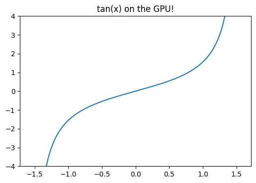
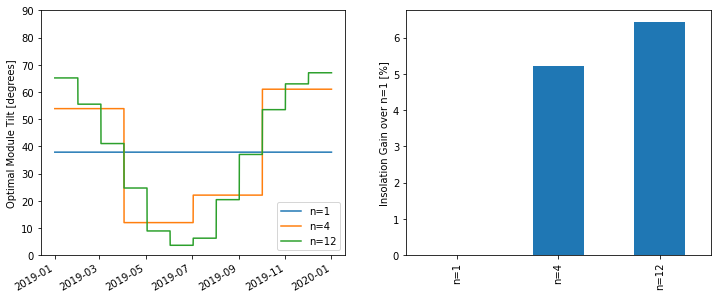
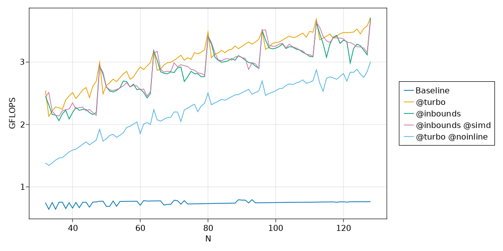
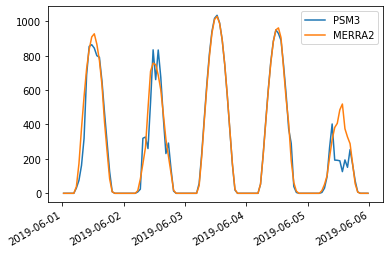

All Posts
PSM3 Pixel Boundaries
- 2022-09-04
The PSM3 provides data with a nominal 2 km spatial resolution, at least according to the NSRDB website. I am interested in what the real underlying data grid actually looks like; this notebook shows that the real grid is defined by angular extent (regular in latitude/longitude), not spatial extent.
Before getting started – querying 5-minute PSM3 data is a bit slow, and likely I’ll want to re-run cells here as I tweak the notebook, so let’s cache the requests to speed things up.

OpenGL Compute Shaders: SPA
- 2022-08-21
This notebook is the third in a series of notebooks about general-purpose GPU (GPGPU) computing using OpenGL’s compute shaders with the goal of an accurate and fast GPU implementation of Reda & Andreas’s Solar Position Algorithm. There’s still some work to do, but what I have is already useful in many contexts and as I get close to the finish line I wanted to do some more rigorous validation in terms of accuracy and runtime speed, using pvlib’s numpy and numba implementations as the baseline.
These comparisons (both error and runtime) will be specific to this particular GPU. I will be interested to see how the results vary across devices…

OpenGL Compute Shaders: Accuracy of Math Functions
- 2022-08-13
This notebook is the second in a series of notebooks about general-purpose GPU (GPGPU) computing using OpenGL’s compute shaders. In working towards a GPU-based implementation of the venerable Solar Position Algorithm (Reda & Andreas 2004) I found that the asin provided by GLSL is not as accurate as I had expected, even considering the reduced precision of 32-bit floats. This notebook examines the (in)accuracy of this GPU’s GLSL implementations of some basic functions useful for scientific programming.
I use the handy helper function from my “first steps” notebook here as well. This encapsulates (1) the boilerplate necessary to shuttle data to and from the GPU and (2) the initialization code on the GPU side needed prior to performing the actual computation of interest.

OpenGL Compute Shaders: First Steps
- 2022-07-30
This notebook is a first exploration into general-purpose GPU (GPGPU) computing using OpenGL’s compute shaders. OpenGL is primarily geared towards rendering graphics and most of its functionality is organized into a sequential rendering pipeline. However, it also includes the ability to run computations outside of the rendering pipeline using so-called “compute shaders”. In essence, a shader is just a little program, written in a C-like language, that executes on the GPU. I am neither qualified nor interested in explaining more than that; if you’re interested then I suggest reading one of the many OpenGL tutorials on the internet. I warn you in advance: it is a big rabbit hole!
If the goal is general-purpose GPU computing, you might wonder why I chose to use OpenGL (geared towards graphics, with GPGPU as an auxiliary function) instead of something like CUDA or OpenCL. I have the naive impression that OpenGL is easier to set up on a new computer than the the more general alternatives are, and a long-term goal of mine is to distribute GPU-accelerated code to the masses, so ease of installation is important. Perhaps someday I’ll change my mind and switch to OpenCL, but for now I experiment with OpenGL.
Speeding up pvfactors
- 2022-04-09
This post is an example of identifying bottlenecks in numerical python code and benchmarking possible alternatives. Specifically, it shows some of the timings I did for the SunPower/pvfactors#140 pull request to the pvfactors bifacial PV simulation package.
The function of interest is pvfactors.engine.PVEngine.run_full_mode, which (as of pvfactors version 1.5.2) doesn’t run as fast as I’d like it to run, especially for large simulations (many PV rows and many timestamps).

Ground-to-sky viewfactor
- 2021-12-29
This post shows two things:
How to calculate, in an infinite sheds model, the view factor to the sky from a point underneath the array

LED I-V Curves
- 2021-12-25
I thought it would be fun to do some quick-and-dirty measurements of the I-V characteristic of some LEDs I had laying around. I have no idea where they came from, but one is red and one is white.
Fun fact: white LEDs, which of course would require many junctions of varying bandgap to produce white light directly, are often implemented by coating a blue LED in a phosphor that downconverts some photons into the rest of the visible spectrum.

Single-axis tracking: GCR vs max angle
- 2021-09-30
Single-axis tracker rotation angles are commonly limited by the hardware’s maximum allowed rotation (45 and 60 degrees are common limits). For arrays with backtracking activated, the time spent at max angle depends on GCR: the higher the GCR, the more the array backtracks, and the less time it spends at max angle. So at some sufficiently large GCR the array will just touch max angle for an instant before it starts backtracking. I don’t have a situation in mind for when this might be useful, but it seemed like a fun math problem to determine that boundary GCR.
The approach here is focused on the point on the tracking curve when backtracking is about to begin, as that represents the maximum realized angle of the tracker. We start with Equation 14 from NREL Technical Report 76626 (PDF):

Seasonal tilt optimization
- 2021-09-27
Playing around with optimizing the tilt of a south-facing adjustable-tilt collector to maximize total insolation capture.
Normal fixed tilt – no seasonal changes
Basic SIMD in Julia
- 2021-08-20
This post summarizes what I’ve learned from a few places on the web (mostly Wikipedia and this thread on the Julia Discourse). I am indebted to countless people in the open-source community and Chris Elrod’s posts in that thread are a stand-out example.
SIMD (single instruction, multiple data) is a cool feature of modern CPUs that allows more than one value to be operated on in a single instruction. This is sort of “closer to the metal” than traditional parallel processing techniques (multiprocessing, multithreading) in that the OS doesn’t have a role in making it happen – it’s just a special type of CPU instruction. As a simple example, a CPU capable of 64-bit SIMD could load two 32-bit ints at once and apply some operation to both of them, instead of loading and operating on them one at a time.
Daily EIA Data
- 2021-08-11
I found an EIA tool that reported the daily net generation breakdown for the lower 48. I didn’t check if its API endpoint is documented anywhere (who needs documentation when web browsers come with built-in developer tools?) but it’s pretty straightforward and I played around with the data a bit. Its monthly sums more or less match the generation numbers in Table 7.2b (see this page), although there are some small differences, maybe because of excluding Hawaii and Alaska? Unfortunately it doesn’t seem to report any data prior to 2018-07-01.
Grab the entire dataset:

Marvin the antlion
- 2021-08-04
The antlion, cousin of the lacewing, is a strange little pit-digging insect. In their adult forms, they’re among Mother Nature’s great works of art:
Adult lacewings are a fairly common (but by no means unwelcome!) sight in North Carolina, fluttering delicately on an evening breeze. However, to stumble over the lacewing in its larval form takes, in my experience, a much more keen eye. The larvae are fierce predators, some of whom have an interesting habit of carrying shields on their backs made of lint, detritus, and whatever else they can get their grubby little mitts on. I, by accident, encountered a fine specimen on an NC Oak tree. I took a video where you can sort of make out its legs and mandibles when it’s flipped over:

Comparing PSM3 and MERRA2 GHI
- 2021-08-03
MERRA2 is a global weather reanalysis dataset providing, among other things, hourly GHI data. I’m not very familiar with MERRA2 and wanted to do a quick comparison with PSM3 (which I am quite familiar with) just to get a rough handle on how the two datasets compare when it comes to irradiance data.
Important notes if you want to run this notebook yourself:
T_cell_typ_avg
- 2021-06-17
This is a short note that derives the “typical average cell temperature” used in the “Weather-Corrected Performance Ratio”. The Weather-Corrected Performance Ratio 1 is defined as:
The denominator is essentially the PVWatts DC model, except the reference cell temperature is not \(T_{\mathrm{STC}}\) but rather a “typical/average” cell temperature. The report has this to say about that decision:
Floating Point Fun
- 2021-03-09
Computers must represent real numbers with some finite precision (ignoring symbolic algebra packages), and sometimes that precision limit ends up causing problems that you might not expect. Here are a couple examples.
The function \(f(x) = \exp(x) - 1\) is kind of fun – by subtracting one from the exponential, it removes the only constant term in the Maclaurin series of \(\exp(x)\):

Summing Uniform Distributions
- 2020-09-25
The distribution of the sum of N uniformly distributed variables came up in a recent RdTools PR. The approach taken there was to just sample each distribution and sum the samples, but I wondered how it could be done analytically. This notebook is inspired by this StackExchange post and extends the derivation from just summing two uniform distributions on \([0,1]\) to two distributions with arbitrary bounds.
Given two independent random variables \(A\) and \(B\) with probability densities \(f_a(x)\) and \(f_b(x)\), the probability density \(f_c(x)\) of their sum \(A + B = C\) is given by the convolution \(f_a * f_b\):

Modeling copper losses in a boost converter
- 2020-06-14
This post will work through a simple power electronics problem. An ideal boost converter uses only lossless components (L, C) and no lossy components (R). However, real inductors will have nonzero resistance in its wiring. This copper loss has a strong effect on the converter’s ability to boost voltage. This follows the approach of Chapter 3 of Fundamentals of Power Electronics, 2e by Erickson and Maksimović.
First let’s draw the boost converter we’ll be modeling. Note that in this context, the precise switching circuit (PWM driver, MOSFET, etc) is irrelevant and represented by an ideal switch.

PVWatts and PVUSA
- 2020-02-01
I read a paper recently that turned on a lightbulb about why the PVUSA/ASTM E2848-13 equation is defined the way it is. To quote the paper 1:
The concept of modeling power by modeling current and voltage separately (other than IV-curve modeling, of course) is obvious in hindsight but had never occurred to me before… so let’s have some fun and try it out!